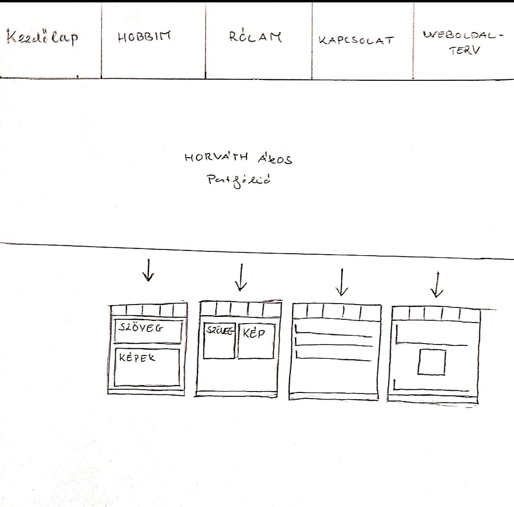

Tervek:
Mivel korábbi tapasztalataim nem voltak sem a html-el sem a CSS-el sem úgy általában a weblaptervezéssel ezért túl sok ötletem nem volt a weblap felépítését illetően. Mindenképp a fejlécben akartam egy navigációs sávot kialakítani, míg az oldalak elrendezését főként út közben találtam ki. Ennek ellenére készítettem egy kezdetleges papír alapú tervet a konstrukcióhoz.
Grafikai terv:

Tapasztalatok és nehézségek:
Sajnos az eredeti terveimtől több helyen is el kellett térnem ahol számomra nem megoldható nehézségekbe ütköztem. Ilyenek fordultak elő a lábléc és egyes síkbeli elrendezések esetén (a lábléc elhelyezésével kifejezetten sokat szenvedtem és így is rengeteg kihasználatlan hely maradt a képernyőn), ezeken a helyeken sajnos alternatív megoldásokhoz kellett folyamodnom. Sok problémám volt még a különböző képernyyőméretekre való optimalizálással kapcsolatban is. Ennek ellenére nagyjából tudtam tartani az eredeti dizájnt és alapvetően elégedett vagyok a végeredménnyel.